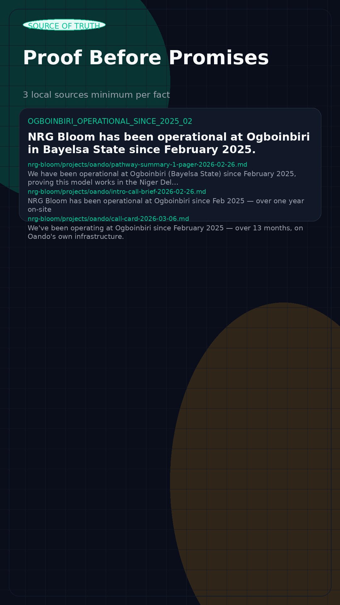

A browser-native content piece built from Codex’s verification pipeline. This version is meant to feel publishable on its own: motion, post copy, carousel structure, and source-of-truth proof in one page.

Most people talking about African compute are still talking in theory.
NRG Bloom has been operational at Ogboinbiri since February 2025.
In remote infrastructure, authority does not come from aesthetic confidence. It comes from operating continuity, site history, and the ability to point to field proof when everyone else is still pointing to market slides.
That is the point of this piece. It does not try to sound clever first. It tries to make one credible claim and force the audience to react to the difference between lived execution and borrowed commentary.